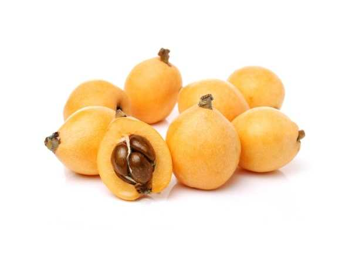

Eriobotrya japonica
Common Names: Loquat, Japanese Medlar, Biwa, Nispero
Local Name: Lokat (Tamil/Hindi), Biwa (Japanese)
Family: Rosaceae
Origin: South-central China; widely cultivated in Japan and worldwide
Plant Type: Perennial evergreen tree
Variety: Multiple cultivars; orange-fleshed and white-fleshed types
Average Lifespan: 30–50 years
| Growth Habit | Small to medium rounded evergreen tree with dense canopy |
| Plant Size | 5–10 meters tall; canopy spread 4–8 meters |
| Leaves | Alternate, oblong-lanceolate, 15–30 cm long, leathery, dark green above, woolly rusty-brown beneath |
| Flowers | White, 1–2 cm across, 5-petaled, in terminal woolly panicles 10–20 cm long |
| Flower Characteristics | Sweetly fragrant (almond-like); bloom in autumn/winter; attract bees |
| Fruit | Oval to pear-shaped, 3–5 cm long, in clusters of 4–30; thin downy skin; juicy sweet-tart flesh |
| Fruit Color | Yellow to deep orange when ripe |
| Seed Characteristics | 1–5 large, smooth, dark brown seeds per fruit (contain cyanogenic glycosides — not edible) |
| Root System | Moderately deep with spreading lateral roots |
| Climate | Subtropical to warm temperate; tolerates mild frost |
| Temperature Range | 15–30°C ideal; tolerates -5°C briefly (flowers damaged at -3°C) |
| Rainfall Requirement | 800–1500 mm annually; well-distributed |
| Soil Type | Well-drained loamy to clay-loam; tolerates various soil types |
| Soil pH Preference | 5.5–7.5 |
| Sun Requirement | Full sun to partial shade (6+ hours daily) |
| Spacing | 5–8 meters between trees |
| Irrigation Method | Drip or basin irrigation; regular watering during fruit development |
| Water Requirement | Moderate; drought-tolerant once established but fruit quality improves with irrigation |
| Can it Grow in Pots? | Yes, in large containers (30+ liters); makes an attractive patio tree |
| Fertilizer Schedule | 3 times per year — after harvest, mid-summer, pre-flowering |
| Recommended Organic Fertilizers | Compost, well-rotted manure, bone meal, potash |
| Pesticide Frequency | Minimal; bag fruit clusters to prevent bird and insect damage |
| Recommended Organic Pesticides | Neem oil, fruit bagging, bird netting |
| Mulching Practice | Organic mulch around base to retain moisture |
| Training System | Open centre or modified central leader; keep canopy low for easy harvest |
| Pruning Time | After harvest (spring); thin fruit clusters for larger fruit |
| How to Prune | Remove inward branches; thin panicles to 4–8 fruits per cluster; tip-prune for compact growth |
| Common Pests | Fruit fly, birds, codling moth, scale insects |
| Common Diseases | Fire blight, pear scab, crown rot, leaf spot |
| Disease Prevention & Remedies | Good air circulation, avoid overhead watering, copper sprays, remove infected material |
| Flowering Months | October–January (autumn/winter flowering — unusual among fruit trees) |
| Fruiting Season | March–June; 90–120 days after flowering |
| Days to Harvest | 90–120 days from flowering |
| Harvest Indicators | Fruit turns deep yellow-orange; slight softening; sweet aroma; easily detaches |
| Average Yield per Plant | 30–50 kg per tree per year (mature tree) |
| Pollination Type | Self-fertile; insect pollination improves yield |
| Pollination Notes | Winter-blooming flowers rely on bees active in mild weather; cross-pollination beneficial |
| Pollination Details | Self-fertile; bees pollinate during warm winter days; multiple varieties improve fruit set |
| Propagation by Seeds | Seeds germinate in 2–4 weeks; seedlings take 6–8 years to fruit; variable quality |
| Propagation by Cuttings | Air layering successful; semi-hardwood cuttings with rooting hormone |
| Propagation by Grafting | Cleft or veneer grafting on seedling rootstock; fruits in 2–3 years (preferred method) |
| Water Usage | Low to moderate; drought-tolerant once established |
| Soil Conservation Practices | Evergreen canopy provides year-round soil protection; good windbreak |
| Organic Practices Used | Composting, mulching, fruit bagging instead of pesticides |
| Companion Plants | Citrus, guava, herbs as understory |
| Biodiversity Benefits | Winter flowers provide critical nectar for bees; fruit supports birds; excellent urban tree |
| Commercial Production Regions | Japan, China, Spain, Turkey, Brazil, India (Nilgiris, Himachal Pradesh) |
| Market Uses | Fresh fruit, ornamental tree, traditional medicine |
| Processing Uses | Jams, jellies, chutney, wine, syrup, canned fruit |
| Market Value (Approx.) | ₹100–300 per kg (India); premium in Japan (₹500+ per kg) |
| Symbolism | National fruit symbol in Japan; "Biwa" is also a traditional Japanese lute shaped like the fruit |
| Traditional Uses | Leaves used in traditional Chinese and Japanese medicine for cough and respiratory ailments; leaf tea widely consumed |
| Calories | 47 kcal per 100g |
| Dietary Fiber | 1.7 g per 100g |
| Vitamin C | 1 mg per 100g |
| Vitamin A | 1528 IU per 100g (high in beta-carotene) |
| Iron | 0.28 mg per 100g |
| Potassium | 266 mg per 100g |
| Antioxidants | Rich in beta-carotene, phenolic acids, flavonoids |
| Other Key Nutrients | Manganese, copper, folate, vitamin B6 |
| Anxiety & Sleep | Loquat leaf tea traditionally used for calming effects |
| Immune Support | Beta-carotene and antioxidants support immune function |
| Anti-inflammatory Properties | Leaf extracts show anti-inflammatory activity; used in traditional medicine for respiratory conditions |
| Heart Health | Potassium content supports cardiovascular health; low in sodium |
| Digestive Health | Dietary fiber aids digestion; leaf tea used for nausea and vomiting in traditional medicine |
Disclaimer: Information provided is for educational purposes only and not a substitute for medical advice. Seeds are toxic — do not consume.
Add your field observations here.